✦ Sección 02
Álbumes Escuchados
Favorito
Me gusto
No me gustó
Neutral

Romance
Luis Miguel
1991
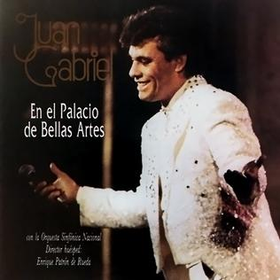
Juan Gabriel en el Palacio de Bellas Artes
Juan Gabriel
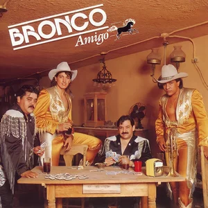
Bronco Amigo
Bronco
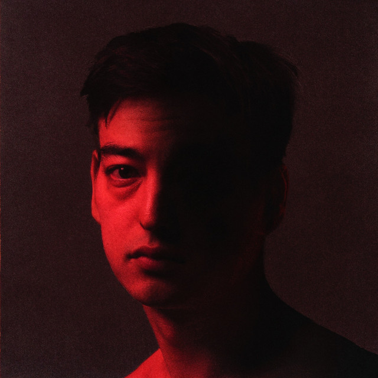
Nectar
Joji
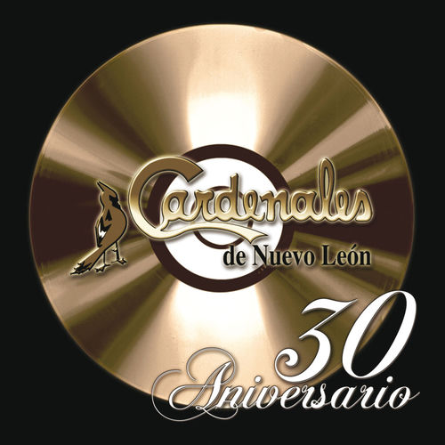
30 Aniversario
Cardenales de Nuevo León

Yeezus
Kanye West

Starboy
The Weeknd
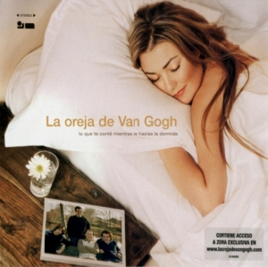
Lo que te conté...
La Oreja de Van Gogh
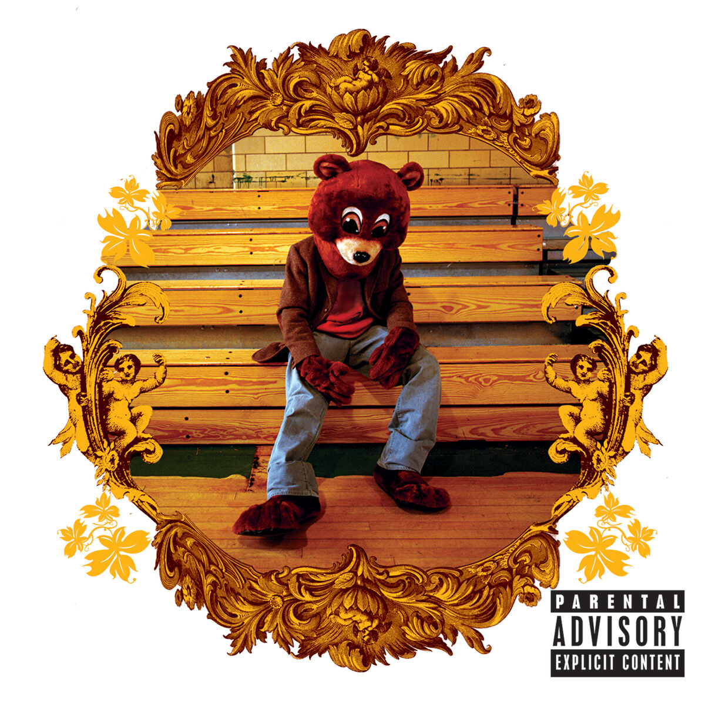
The College Dropout
Kanye West

X100PRE
Bad Bunny

Late Registration
Kanye West

After Hours
The Weeknd

Beauty Behind the Madness
The Weeknd
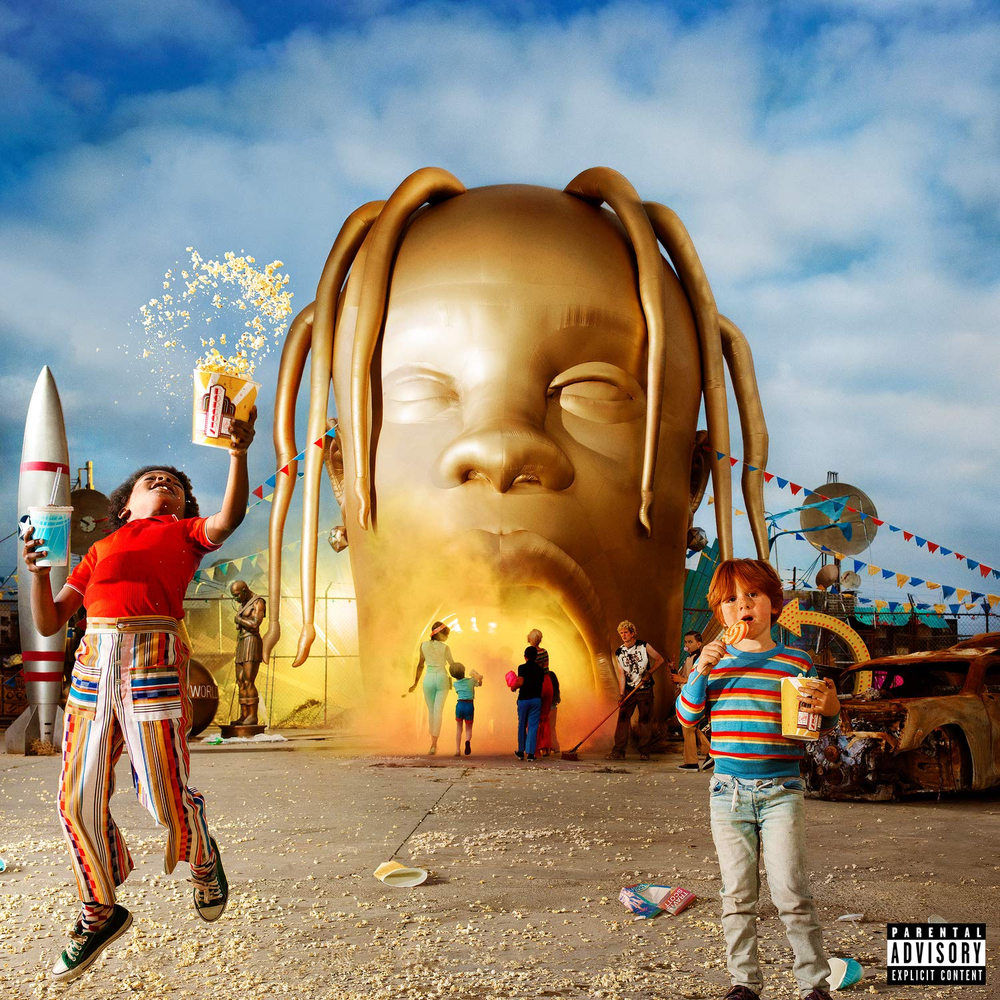
ASTROWORLD
Travis Scott
2018

Camino del amor
Temerarios
1992
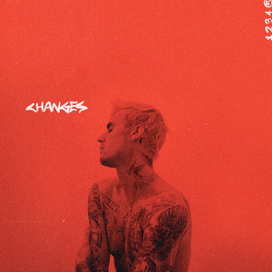
Changes
Justin Bieber
2020

CONTIGENTE
Natanael Cano
2024
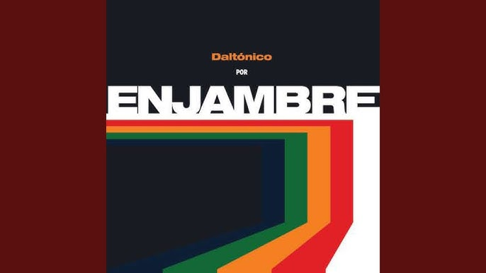
Daltónico
Enjambre
2010
DINASTIA
Humbe
2023
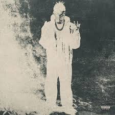
ÉXODO
Peso Pluma
2024
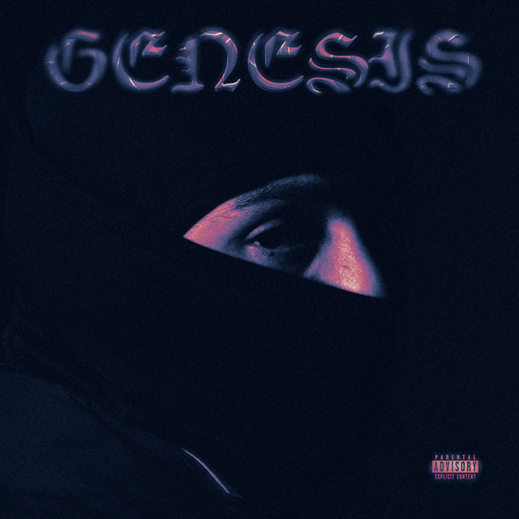
GÉNESIS
Peso Pluma
2023

J_DP
Junior H
2023
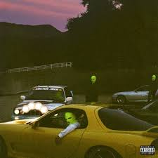
JACKBOYS
JackBoys & Travis Scott
2019
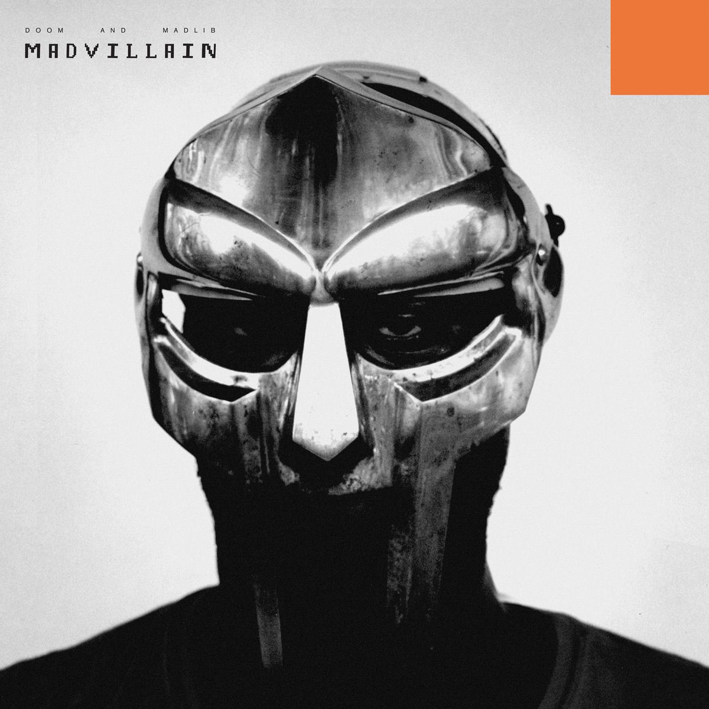
Madvillainy
MF DOOM & Madlib
2004

Mi vida eres tú
Los Temerarios
1993
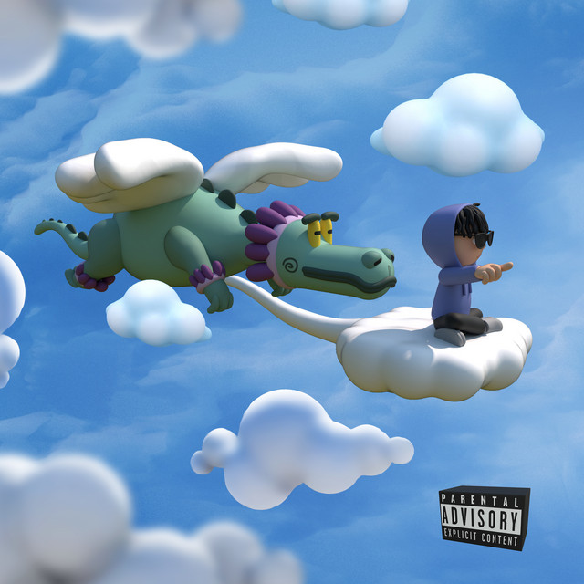
MÚSICA
Playboi Carti
2024

MVEC2
Kevin Kaarl
2023
Nata Montana
Natanael Cano
2023

Por el mundo
Bronco
1991

Por Retenerte
Bronco
1992
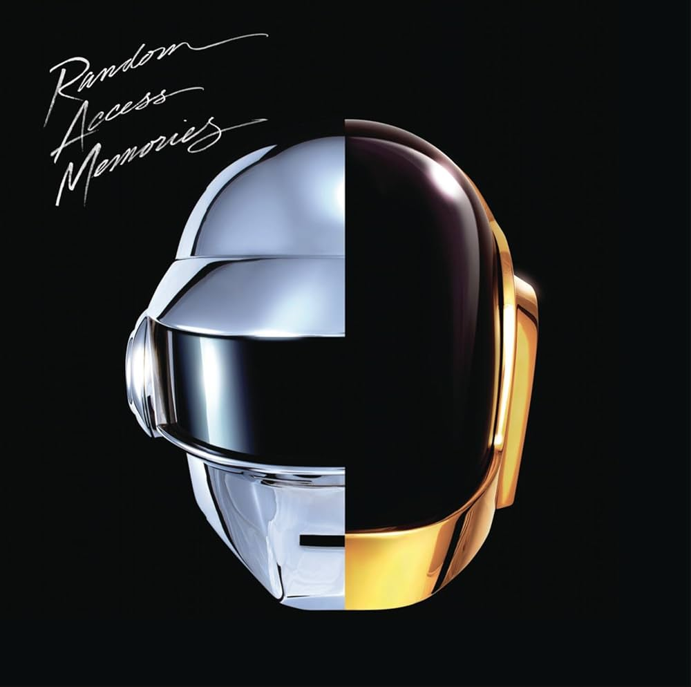
Random Access Memories
Daft Punk
2013
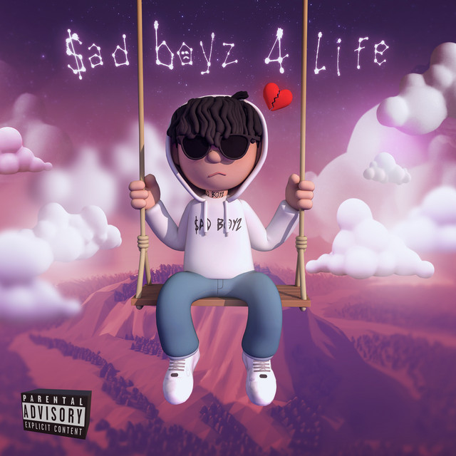
Sad Boyz 4 Life
Junior H
2021

Sad Boyz 4 Life II
Junior H
2023
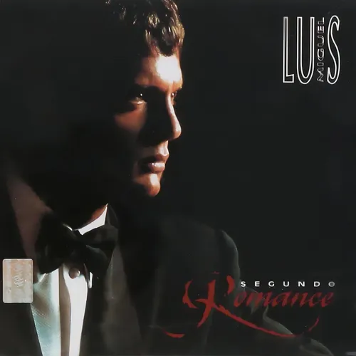
Segundo Romance
Luis Miguel
1994

Super Bronco
Bronco
1989

Tu última canción
Los Temerarios
1990
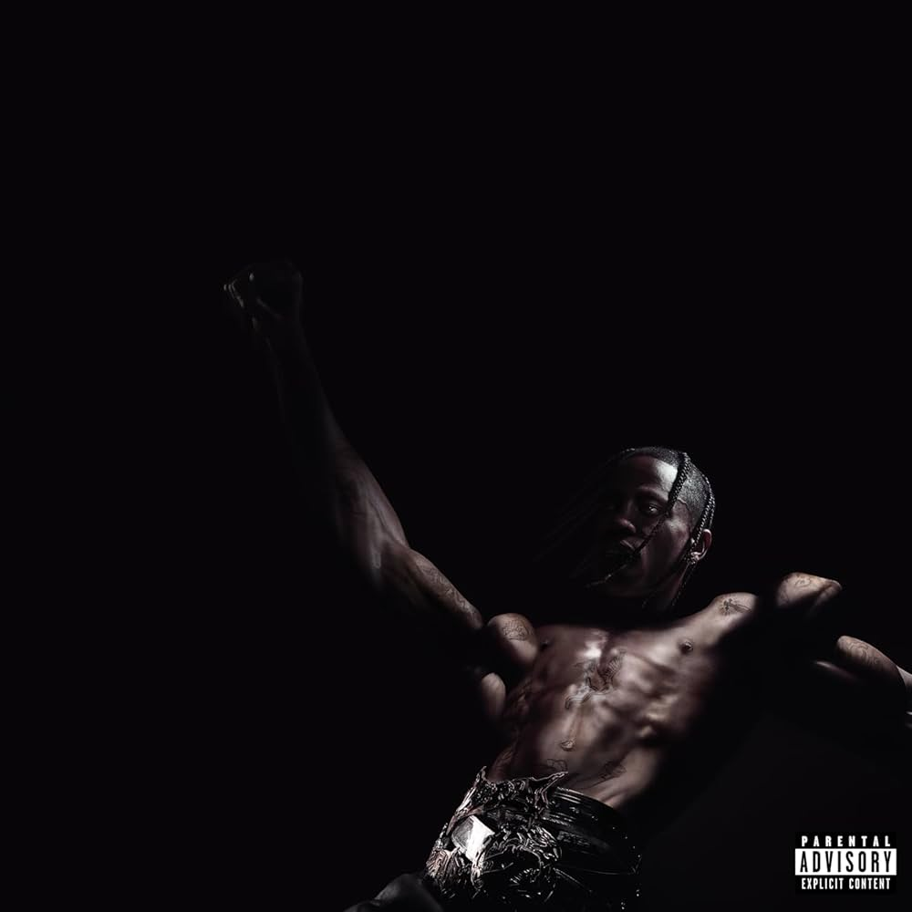
UTOPIA
Travis Scott
2023
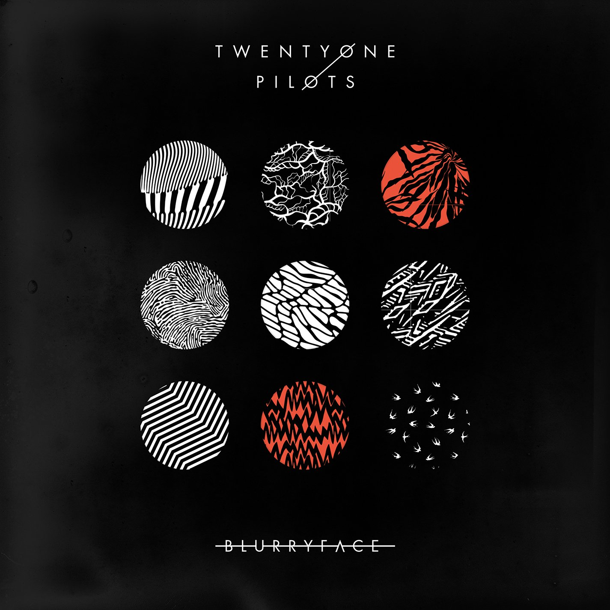
TOP_B
Bizarrap
2021